Visualization
The seven algorithms KD supports work in different ways: a population of
expression trees, a neural network paired with a genetic search, a policy
network emitting expressions symbol by symbol, a pretrained Transformer, rounds
of proposals from a large language model, a one-shot sparse regression over a
candidate library. Looking at any of them is the same call: hand the fitted result to
kd.VizEngine and one call renders the whole set of figures. Switch
algorithm= and the figures follow, with nothing new to learn about how to read
them. This page is the gallery; Figure generation covers how to
render them for your own run.
Platform figures
Whichever algorithm ran, VizEngine draws the same group: best score per
iteration, measured against predicted, the equation typeset and as a structure
tree, the fitted coefficients, and the residual as a histogram and as a spatial
map. Pass the dataset as well and it adds the field comparison, the u_t
residual field, time slices and an error heatmap.
The six figures below come from one run: SGA-PDE on the KdV dataset that ships with KD, 200 generations, seed 42.
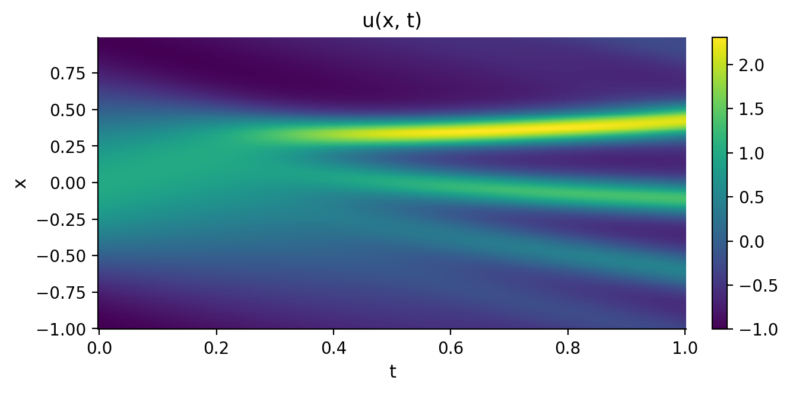
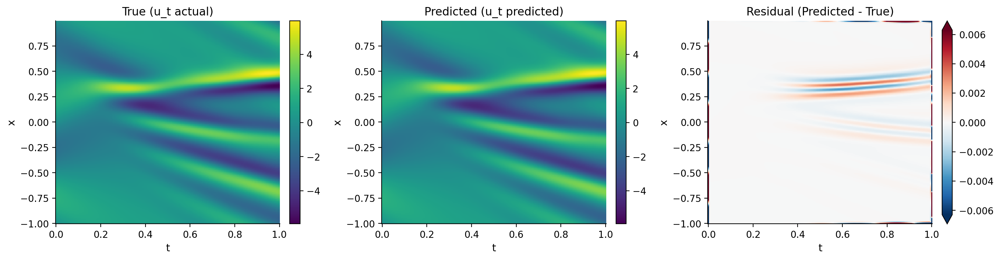
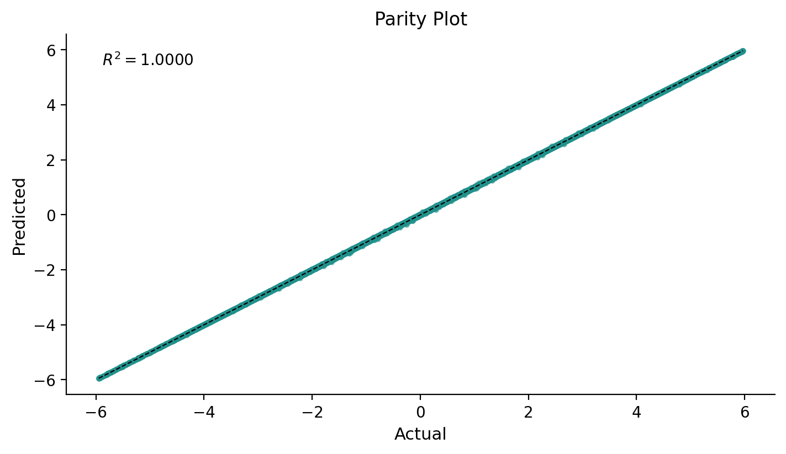
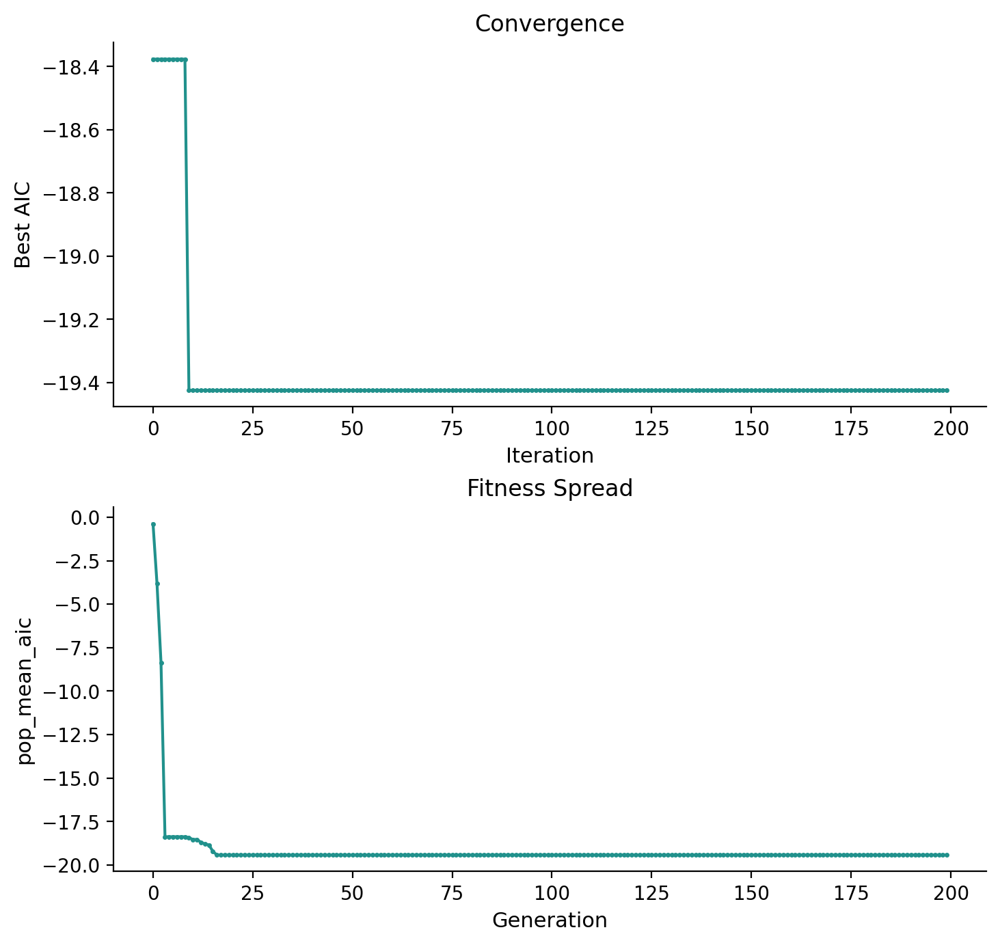
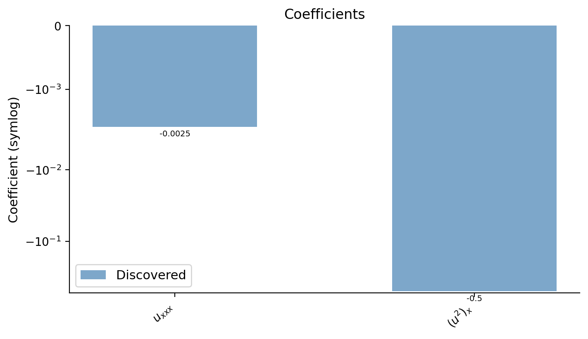
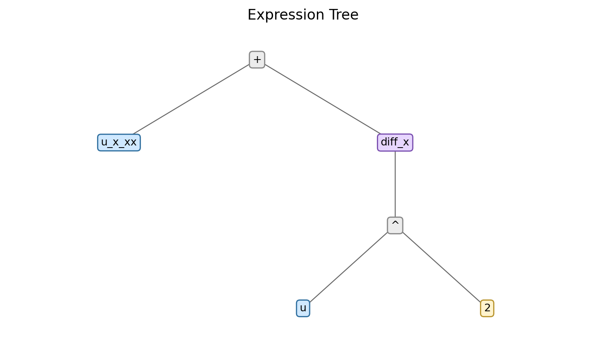
One call renders all 15 of them into a single HTML file, every figure inlined as SVG, together with the run's settings and its full result as JSON. The one from the configuration above is published here: example report (1.7 MB).
Algorithm panels
The group above answers whether the result is right; an algorithm's own panels answer how it got there, so each algorithm declares and draws its own:
- SGA-PDE, DLGA-PDE: population-level records, per generation the diversity of the candidates, the term count of the candidate equations and the score spread of the survivors, plus the training loss of the neural-network surrogate (filled in only when the platform trained one). SGA-PDE also draws the genome tree of its best individual.
- DISCOVER: the policy network's training record, per iteration the reward (one curve for the elite subset, one for the full batch), the entropy regularizer and the reward baseline.
- EqGPT: the reward of the candidate pool per epoch and its spread, plus the cross-entropy loss of each epoch's fine-tune. In multi-case mode it adds the reward of the discovered structure on every case.
- LLM4ED: the reward spread of the candidate pool per round, the count of invalid candidates, and the cumulative number of language-model calls.
- PySR: the Pareto front (complexity against loss), KD's independent re-score of that same front, and the two scores against each other.
- PySINDy: one comparison figure putting the NMSE of PySINDy's native coefficients next to the NMSE of KD's independent refit.
Each row below is one algorithm's panels, from that algorithm's own worked run.
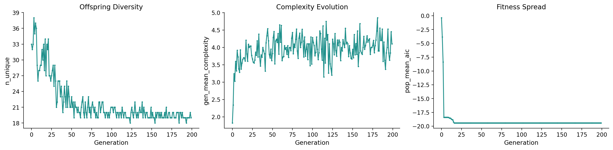
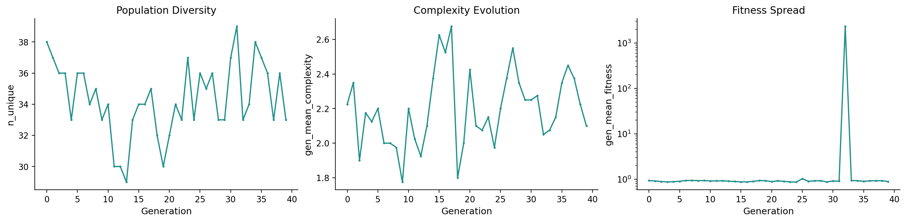
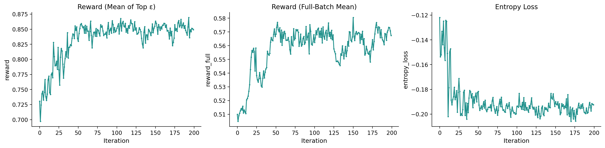
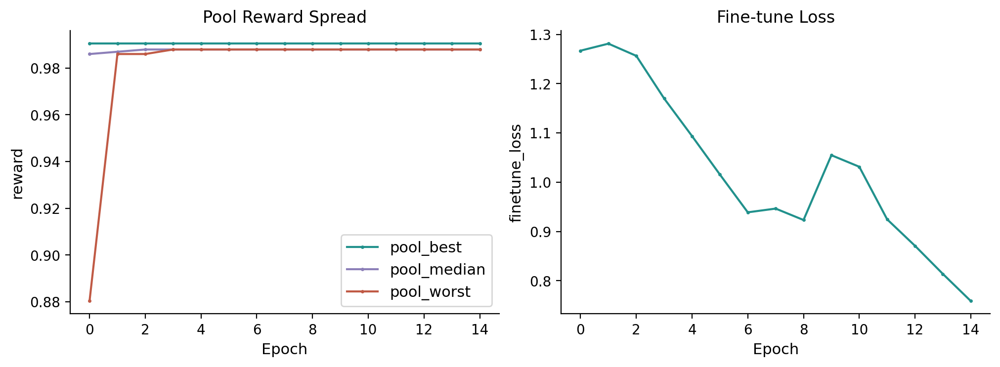
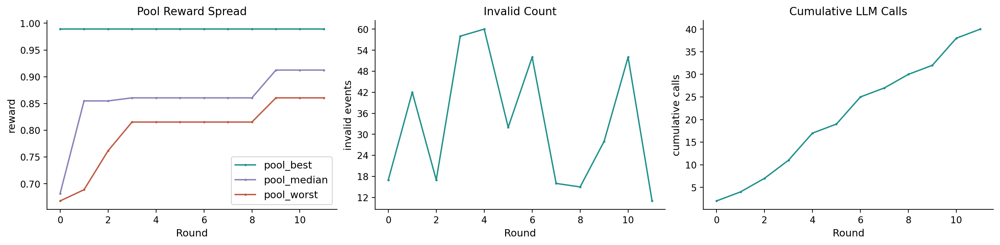
Data shape
Which figures a run gets follows from the shape of its data rather than from the
algorithm. Data on a regular grid gets the whole set. Scattered measurements
carry point coordinates and no grid, so the field family is left out and the
rest draws as usual; the
breaking-waves example is a run of that kind. A
table of X against y has no field at all, and the coefficient bar follows
whether the run returned an equation rather than on the shape of the data.
Two-dimensional space plus time adds one more: pass animate=True and
render_all writes a GIF of the field evolving.
Whatever is left out is named in report.warnings, one note per figure family,
and the same notes appear on the report page.
Figure index
Every figure KD draws, and the call that draws just that one. The platform half
runs for any result; the rest belong to the algorithm named beside them. Two are
composed at render time and are not listed: SGA-PDE's genome tree, and EqGPT's
panels in multi-case and steady mode. At run time plugin.list_plots() returns
the complete set for the algorithm that ran.
| Figure | Call | Owner |
|---|---|---|
| Coefficient bar | kd.viz.plots.plot_coefficient_bar(result, ax) |
platform |
| Convergence | kd.viz.plots.plot_convergence(result, ax) |
platform |
| Equation | kd.viz.plots.plot_equation(result, ax) |
platform |
| Equation tree | kd.viz.plots.plot_equation_tree(result, ax) |
platform |
| Error heatmap | kd.viz.plots.plot_error_heatmap(dataset, integration_result) |
platform |
| Field animation | kd.viz.plots.plot_field_animation(dataset, integration_result) |
platform |
| Field comparison | kd.viz.plots.plot_field_comparison(dataset, integration_result) |
platform |
| Parity | kd.viz.plots.plot_parity(result, ax) |
platform |
| Pde residual field | kd.viz.plots.plot_pde_residual_field(result) |
platform |
| Residual | kd.viz.plots.plot_residual(result) |
platform |
| Score bar | kd.viz.plots.plot_score_bar(results, ax) |
platform |
| Summary table | kd.viz.plots.plot_summary_table(results, ax) |
platform |
| Time slices | kd.viz.plots.plot_time_slices(dataset, integration_result) |
platform |
| Overlaid convergence | kd.viz.plots.render_overlaid_convergence(results, ax) |
platform |
| Offspring Diversity | plugin.render_plot("population_diversity", ax) |
SGA-PDE |
| Complexity Evolution | plugin.render_plot("complexity_evolution", ax) |
SGA-PDE |
| Fitness Spread | plugin.render_plot("fitness_spread", ax) |
SGA-PDE |
| Surrogate Training Curve | plugin.render_plot("surrogate_training", ax) |
SGA-PDE |
| Fitness Spread | plugin.render_plot("fitness_spread", ax) |
DLGA-PDE |
| Population Diversity | plugin.render_plot("population_diversity", ax) |
DLGA-PDE |
| Complexity Evolution | plugin.render_plot("complexity_evolution", ax) |
DLGA-PDE |
| Surrogate Training Curve | plugin.render_plot("surrogate_training", ax) |
DLGA-PDE |
| Reward (Mean of Top ε) | plugin.render_plot("reward_convergence", ax) |
DISCOVER |
| Reward (Full-Batch Mean) | plugin.render_plot("reward_full_mean", ax) |
DISCOVER |
| Entropy Loss | plugin.render_plot("entropy_loss_decay", ax) |
DISCOVER |
| Reward Baseline | plugin.render_plot("baseline_ewma", ax) |
DISCOVER |
| Reward Convergence | plugin.render_plot("reward_convergence", ax) |
EqGPT |
| Pool Reward Spread | plugin.render_plot("pool_reward_spread", ax) |
EqGPT |
| Fine-tune Loss | plugin.render_plot("finetune_loss", ax) |
EqGPT |
| Pool Reward Spread | plugin.render_plot("pool_reward_spread", ax) |
LLM4ED |
| Invalid Count | plugin.render_plot("invalid_count", ax) |
LLM4ED |
| Cumulative LLM Calls | plugin.render_plot("llm_calls", ax) |
LLM4ED |
| Pareto Front | plugin.render_plot("pareto_front", ax) |
PySR |
| kd Audit Path | plugin.render_plot("kd_audit_path", ax) |
PySR |
| Score Agreement | plugin.render_plot("score_agreement", ax) |
PySR |
| Native vs Refit NMSE | plugin.render_plot("native_refit_agreement", ax) |
PySINDy |